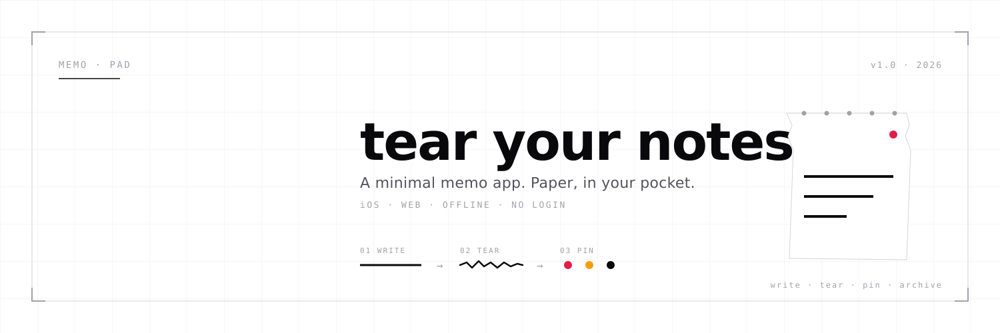

Profile icon (400×400) + Banner (1500×500)。Xは自動で円形クロップする。

memo-pad
@memopad_app
ちぎるメモ帳。紙の気持ちよさを、指先に。iOS · Web · Offline.
🔗 memo-pad.app📍 Tokyo🗓 Joined May 2026
先に見せた投稿ロードマップのアバターと同じ系統。小サイズでも強く読める。
アプリアイコンの"ちぎれた紙"を残した派生。小サイズだと読みにくくなる可能性あり。